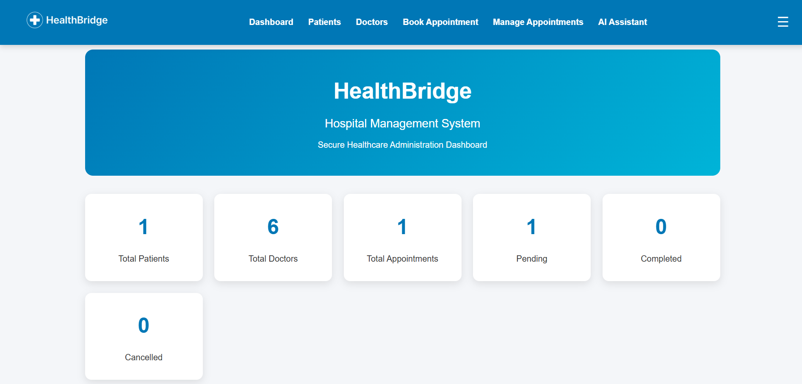
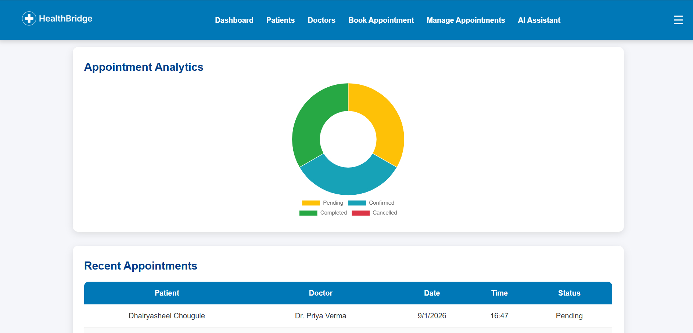
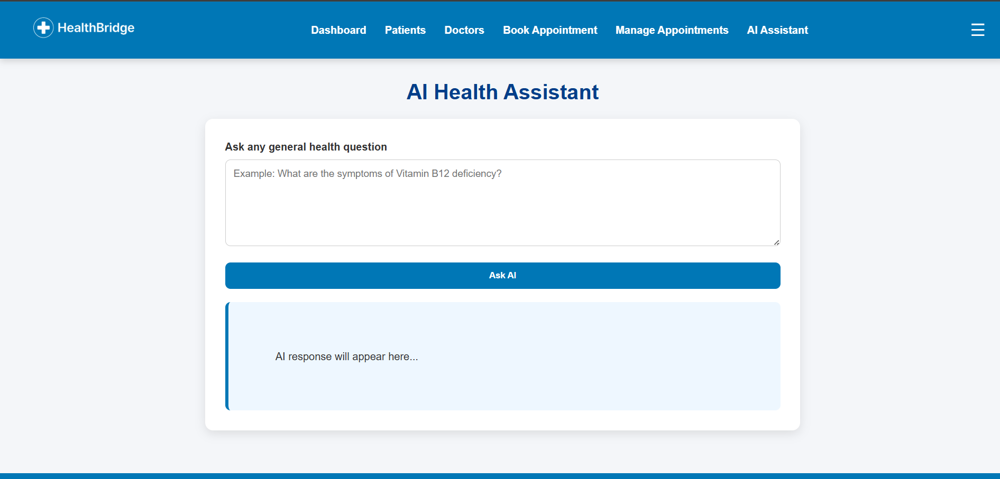
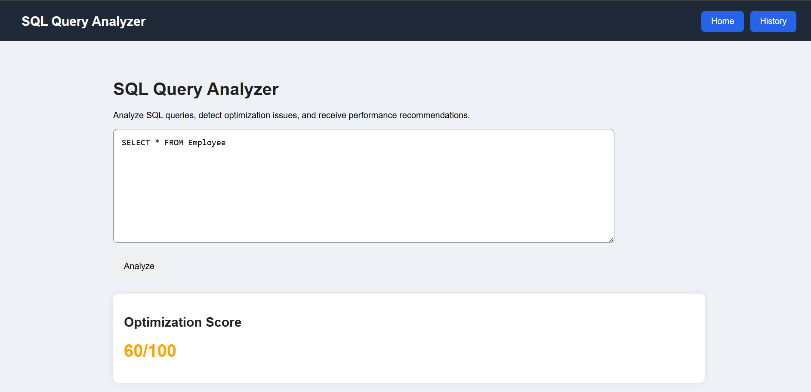
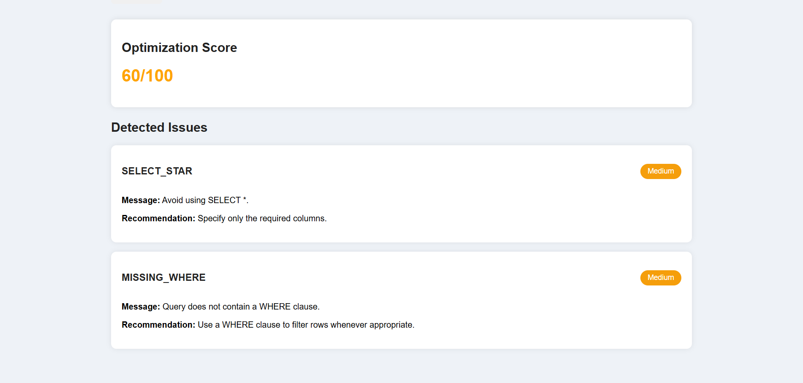
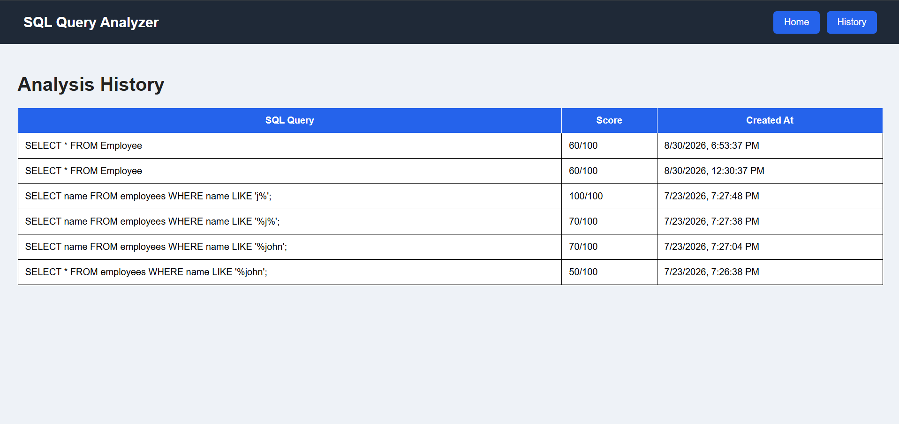

My Projects
HealthBridge



HealthBridge is a Hospital Management System developed to simplify hospital administration through a secure web application. It allows administrators to manage patients, doctors, appointments, medical reports, dashboard analytics, and AI-powered healthcare assistance from a single platform.
GitHub LinkSQL Query Analyzer



SQL Query Analyzer is a full-stack web application that analyzes SQL queries and identifies common performance issues. It provides optimization suggestions and calculates an optimization score based on the detected issues. The application also stores previous analyses so users can review them later.
GitHub Link